English Masterclass · 90s Sitcoms · Season 3, Episode 19
Jealousy, Spite, and the Tiny T-Shirt: Learning Real English from Friends
How one legendary breakup episode of Friends — *The One with the Tiny T-Shirt* — turns raw heartbreak, sarcasm, and a Frankie Say Relax tee into a masterclass of living English vocabulary, idioms, and grammar.
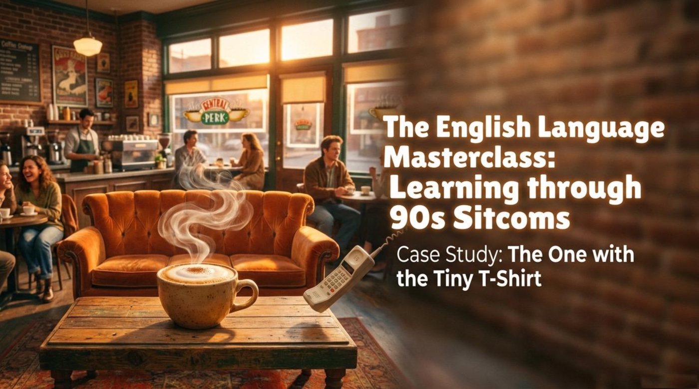
☕Introduction: Why a Breakup Episode Is a Goldmine for Learners
Here is a remarkable fact about television history: Friends ran for ten seasons and produced 236 episodes, and nearly three decades later it is still one of the most-watched shows on the planet. The reason is simple — the characters speak the way real people speak. They argue, they sulk, they mock each other, and they pour their hearts out over coffee. That is precisely why sitcoms are such powerful language classrooms: every emotion is acted out, every joke lands in context, and every new expression arrives attached to a face, a gesture, and a story.
The case study of this masterclass is "The One with the Tiny T-Shirt" — the Season 3 episode that picks up the wreckage of Ross and Rachel's breakup and turns it into comedy gold. The lesson material is built around three intertwining storylines, a rich set of emotional vocabulary, two classic idioms, and the second conditional in natural, overheard conversation. It should be noted that the educational value here goes far beyond entertainment: this single episode carries the words petty, spite, crush, and zillionaire — vocabulary that native speakers use constantly and learners rarely meet in textbooks.
📖Content and Context: Three Storylines, One Lesson in Human Nature
The episode unfolds along three parallel tracks, each one a small drama about pride, attraction, and ego. The lesson material summarizes them beautifully in three short frames: "The Exes" — *Rachel goes on a date with Mark to get back at Ross. Ross struggles to let go of their relationship.* "The Co-Stars" — *Joey lands a role in a play but immediately clashes with his snobby, Yale-educated co-star, Kate.* And "The Millionaire" — *Monica dates Pete, a man with endless wealth, but realizes she feels absolutely no physical spark.*
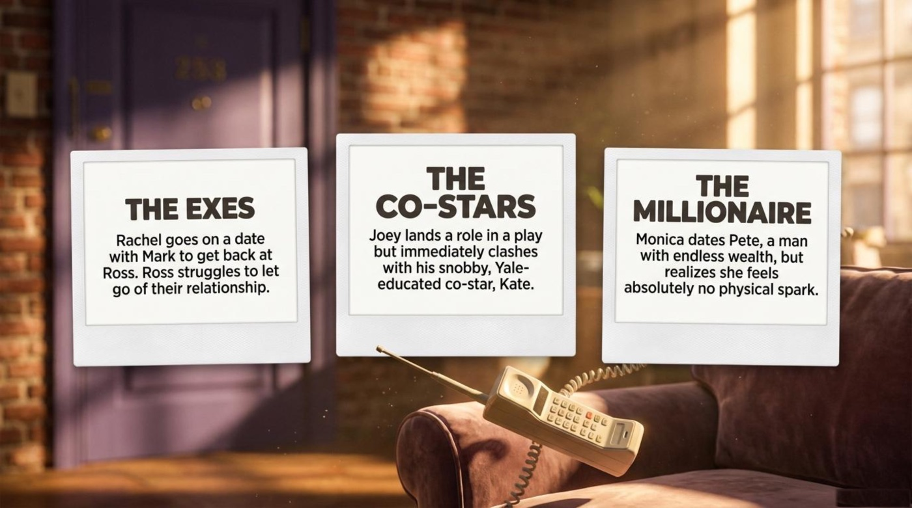
The key point is that all three plots are driven by the same engine: feelings that people refuse to admit. Rachel insists she is fine while dating Mark purely to wound Ross. Ross lectures everyone about moving on while clinging to a fifteen-year-old T-shirt. Monica enjoys Pete's generosity while hiding the fact that she feels nothing physical. Joey despises Kate's ego while secretly developing a crush on her. Pay attention to how the material maps this out in a clean structure — for each pair of characters, it names the conflict, the catalyst, and the current status:
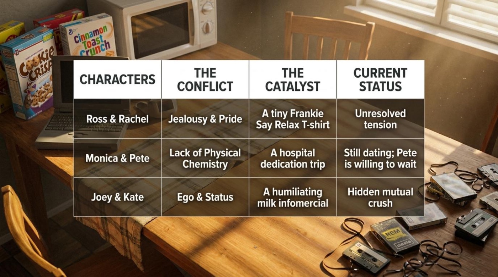
- Ross & Rachel — the conflict is jealousy and pride, the catalyst is a tiny "Frankie Say Relax" T-shirt, and the current status is unresolved tension.
- Monica & Pete — the conflict is a lack of physical chemistry, the catalyst is a hospital dedication trip, and the status is still dating; Pete is willing to wait.
- Joey & Kate — the conflict is ego and status, the catalyst is a humiliating milk infomercial, and the status is a hidden mutual crush.
Interestingly, the most famous object in the episode is also the smallest: the tiny T-shirt. Ross demands back a shirt he has not worn since he was fifteen, and Rachel wears it around the apartment precisely because she knows it will get under his skin. The material defines this behavior with a perfect adjective — "Ross demanding back a t-shirt he hasn't worn since he was 15" is the textbook example of being petty. And Rachel's decision to accept a date with Mark is labeled with an equally precise noun — "Rachel agreeing to date Mark purely out of spite toward Ross."
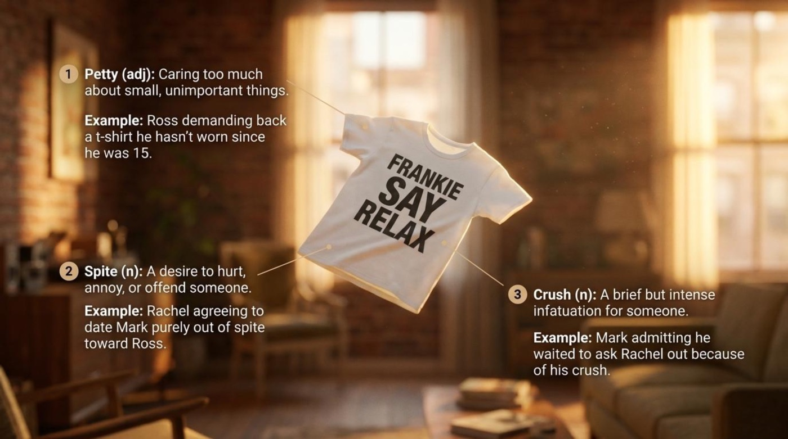
The storyline of Joey and Kate adds a second layer of vocabulary rooted in the acting world. The material explains that a co-star is "a fellow actor sharing top billing in a play or movie," that an infomercial is "a long television advertisement that demonstrates a product," and that zillionaire is "an exaggerated way to describe someone with extreme, almost unimaginable wealth" — used here for Pete buying life-sized Storm Troopers.
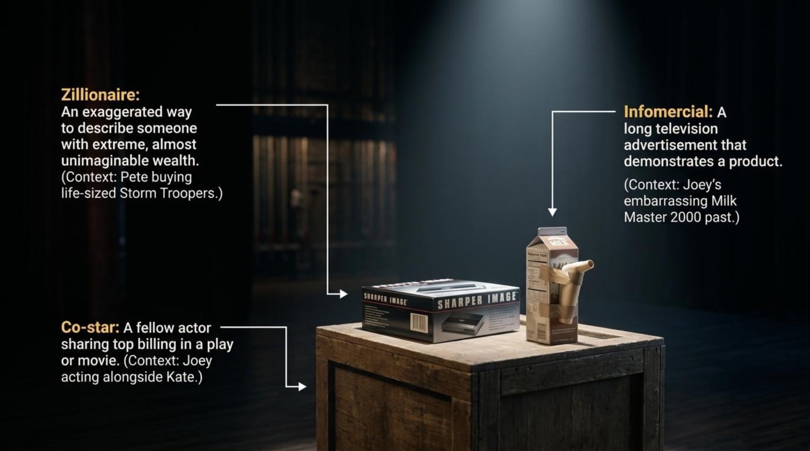
Grammar hiding in the jokes: the second conditional
Native speakers do not learn grammar from charts — they absorb it from lines like Chandler's. The material flags the episode as a showcase for the second conditional, "used for imaginary or unlikely situations in the present/future," with the structure If + [Past Simple], [would + verb]. The episode delivers two textbook examples: Chandler's sarcastic comfort to Ross — "If I broke up with you, I'd miss you" — and his diagnosis of Joey's feelings — "If you were in a school yard, you'd be pulling her pigtails." Notice that both sentences describe things that are not true; that gap between form and reality is exactly what makes the second conditional so expressive and so funny.
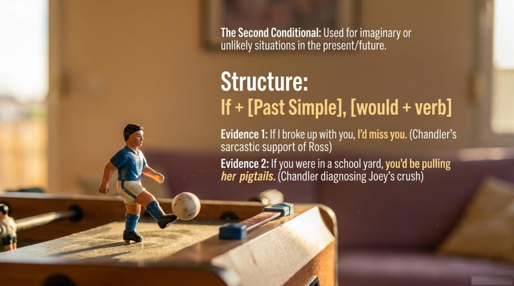
Practical advice for every learner follows directly from this: when studying a sitcom, it is far more effective to collect sentences that made you feel something than to memorize rules in isolation. A line like "If I broke up with you, I'd miss you" carries the grammar, the sarcasm, and the friendship all at once. That is three layers of English for the price of one viewing.
💡Vocabulary and Language Takeaways
This episode is a vocabulary treasure chest, and the lesson material digs into it word by word. Each item below is presented the way the material presents it — with the term, its meaning, a quoted example, and the explanation of why the example fits. It is worth remembering that these are not rare literary words; they are everyday emotional vocabulary that native speakers use when talking about relationships, work, and money.
The emotional core: petty, spite, and crush
Petty (adjective) means "caring too much about small, unimportant things." The material's example is surgical in its precision: "Ross demanding back a t-shirt he hasn't worn since he was 15." The explanation writes itself — the shirt has zero practical value; the demand is purely about control and pride. This word is a frequent player in arguments, and learners who master it gain the ability to describe a very common human failing in a single word.
Spite (noun) is defined as "a desire to hurt, annoy, or offend someone," and the episode shows it in action: "Rachel agreeing to date Mark purely out of spite toward Ross." The fixed phrase out of spite is the gold here — it signals that the action is motivated by revenge rather than genuine interest.
Crush (noun) is "a brief but intense infatuation for someone." The material's example — "Mark admitting he waited to ask Rachel out because of his crush" — also appears in the lesson's hidden detail: the final status of Joey and Kate is a hidden mutual crush, proving that a crush can stay secret for a long time before it surfaces.
The world-of-work words: zillionaire, infomercial, and co-star
Zillionaire is not in any dictionary as a precise figure — and that is the point. The material calls it "an exaggerated way to describe someone with extreme, almost unimaginable wealth," and the episode context seals it: Pete buying life-sized Storm Troopers. The humor lives in the exaggeration itself.
Infomercial — "a long television advertisement that demonstrates a product" — appears in the lesson as Joey's embarrassing past: his humiliating Milk Master 2000 gig. For learners, the word is a perfect example of a compound coinage (information + commercial) that English loves to produce.
Co-star is "a fellow actor sharing top billing in a play or movie" — in this case, Joey acting alongside Kate. The prefix co- meaning "together" recurs across English: co-worker, co-author, co-pilot.
The phrasal verbs of heartbreak: move on and get back at
The material presents both phrases under the heading of the breakup as a "root action." Move on means "to leave the past behind and progress emotionally," as Ross himself says: "I'm just trying to help you move on." The irony, of course, is that Ross is the one unable to follow his own advice. Get back at means "to take revenge on someone for a perceived wrong," and Mark — the man who has a crush on Rachel — suggests the bolder reading: "I say we get back at him right here on this couch."
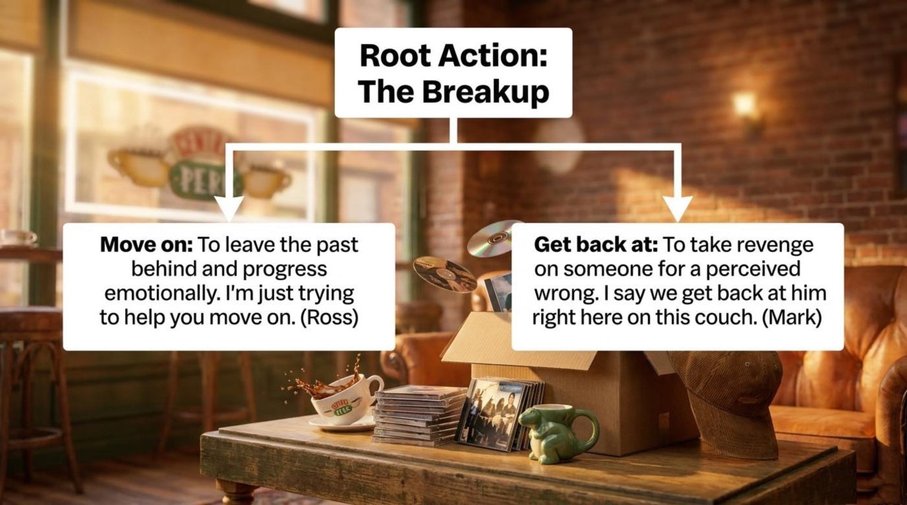
The judgment words: hypocritical and jerkass
Not every word in the lesson is polite, and that is deliberate — real English includes sharp words, and learners need to recognize them even if they choose not to use them. Hypocritical (adjective) means "behaving in a way that goes against what you claim to believe," and the evidence is Ross at his most human: he is furious that Rachel is dating three weeks after their breakup, yet he slept with someone three hours after they broke up — the material adds the punchline, "bullets have left guns slower!"
Jerkass (adjective/noun) is defined as "someone who is unnecessarily rude and condescending." The material's evidence describes Kate immediately asking Joey a cruel, condescending question about his role the moment they meet — establishing her as the ego-driven antagonist of the rehearsal room. Jerkass is crude, humorous, and very online-era American — a word to recognize, not to deploy in a job interview.
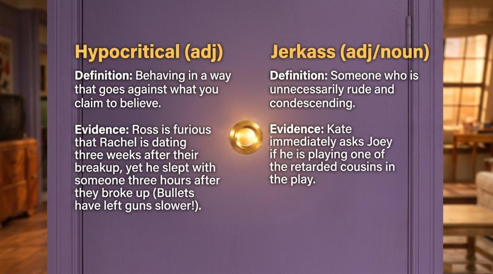
Every key term from this section lives on an interactive card below. Click a card — or tab to it and press Enter — to flip it and reveal the full lesson entry: literal meaning, contextual meaning, a quoted example, and a note on why the word matters.
🧅Deeper Meaning: Metaphors and Symbols in the Episode
The lesson material is not only a vocabulary list — it reads the episode symbolically, and four images carry the weight of the whole lesson.
1. The tiny T-shirt — pride made fabric
The tiny "Frankie Say Relax" T-shirt is the title object and the emotional catalyst of the entire Ross–Rachel plot. A shirt Ross has not worn since he was fifteen should be worthless, yet both exes fight over it as if it were treasure. The material labels it the catalyst of "jealousy and pride," and the symbolism is exact: the shirt is a stand-in for the relationship itself — too small to fit either of them anymore, but too charged with memory to surrender. When Rachel wears it to provoke Ross, the garment becomes a weapon of spite; when Ross demands it back, it becomes proof of petty pride.
2. The onion — peeling a character to the core
The idiom "peel the onion" is defined in the material as looking "deeper into a problem, examining it layer by layer to find the core motivation." The episode context is theatrical: the Director tells Kate and Joey to peel the onion to understand why their characters are attracted to each other. The metaphor matters far beyond acting — it is the master skill of both drama and language learning. A sarcastic line like "If you were in a school yard, you'd be pulling her pigtails" only makes sense once the listener peels past the words to the motivation beneath: Joey does not hate Kate at all; he is hiding a crush behind insults.
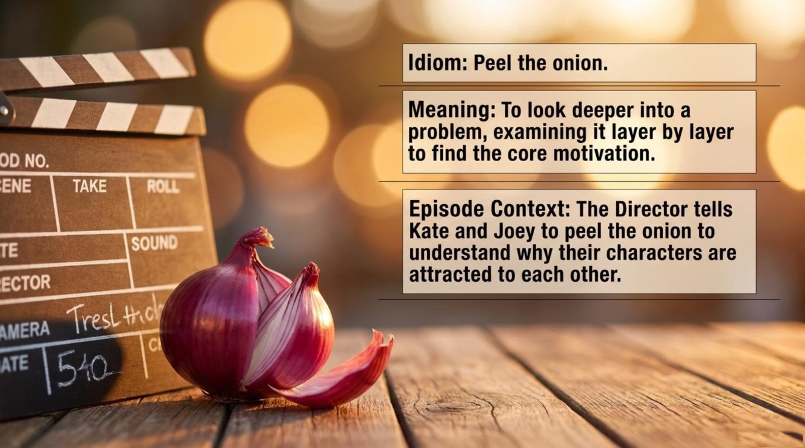
3. Sliced bread — sarcasm as a precision instrument
The idiom "the greatest thing since sliced bread" normally praises an excellent invention or an impressive person. The material highlights the episode's twist: Joey uses it sarcastically to describe Kate's massive ego "because she went to Yale Drama school." The symbol here is not bread but tone — the same words flip meaning entirely depending on delivery. For learners, this is a crucial warning: idioms are not safe, polite decoration; in the hands of a Chandler or a Joey, they become blades.
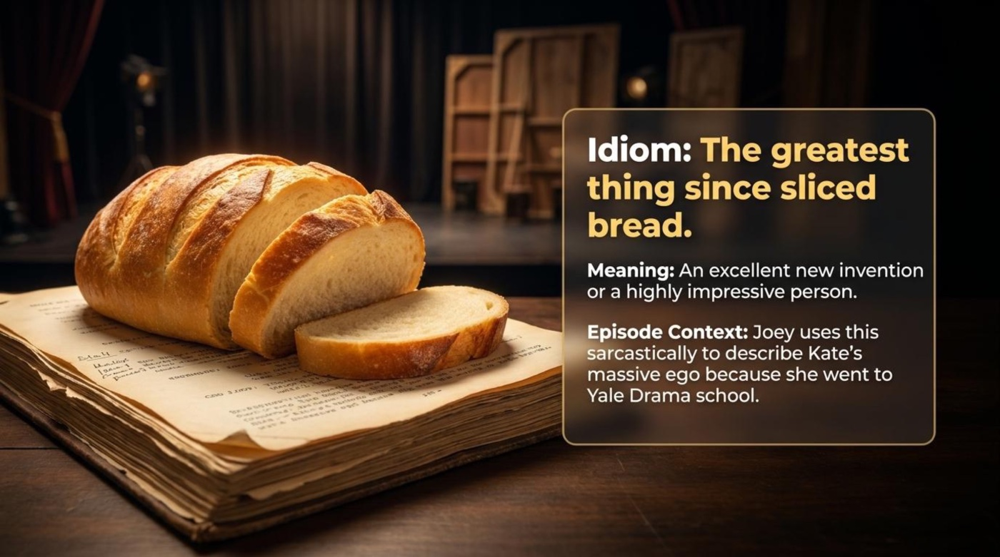
4. The shattered coffee cup — emotion breaking in public
Central Perk's cups do not just hold coffee; they measure emotional pressure. The material's memory quiz asks what causes Gunther to drop and shatter the cups in the background — the seismic news of Ross and Rachel's breakup, landing on a man who quietly harbors his own feelings for Rachel. The exploding cup is the perfect visual metaphor for the episode's thesis: unspoken feelings do not disappear; they spill, shatter, and make a mess in public. Every character in this episode is a cup being filled past the brim.
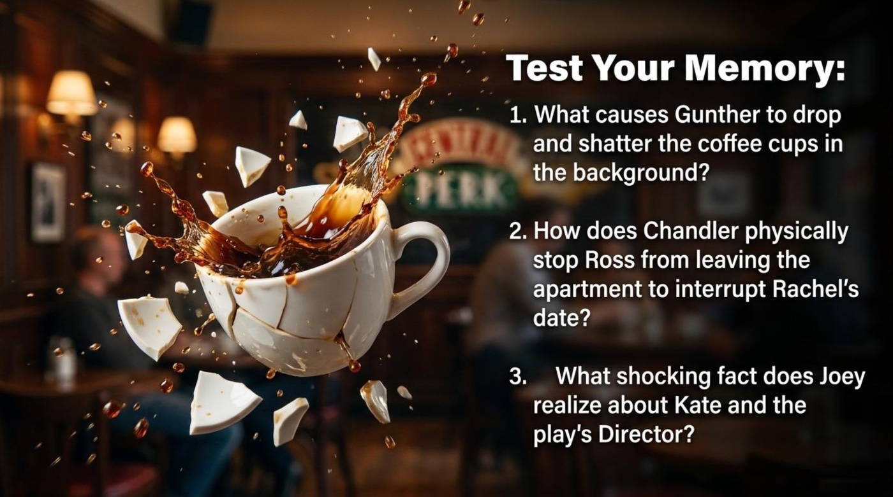
5. The two registers of comedy: literal vs. sarcastic
The material closes its comedy analysis with a pair of quotes that function as a final symbol of the show's genius. Joey's deadpan "Now, see, that's acting" — spoken with full sincerity about deliberately failing to pour milk — is comedy in literal meaning. Chandler's "And the inventor of the door rests happily in his grave" — his sarcastic reply to Ross stating the obvious — is comedy in sarcastic meaning. Together they form a complete mini-lesson in how the same language carries two opposite engines of humor.
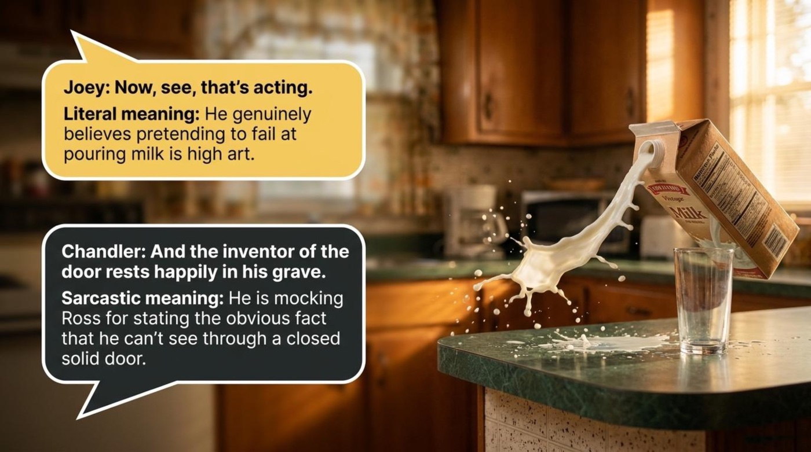
✅Comprehension Check
It is time to test whether the episode's English has truly moved in. The interactive quiz below draws on the storyline charts, the vocabulary entries, the idioms, and the grammar evidence from the lesson material. Instant feedback appears after every answer, a live score tracks progress, and the final panel delivers a verdict worthy of Central Perk's orange couch.
🌟Conclusion: Take the Lesson Into the Real World
The lesson material closes with a warm, memorable send-off that doubles as a grammar exercise: "Take your new vocabulary (Petty, Spite, Zillionaire) into the real world" — and the encouraging promise that "if you practice your conditionals, you will master them." Notice the beautiful symmetry: the lesson that opened with a breakup ends with a conditional full of hope.
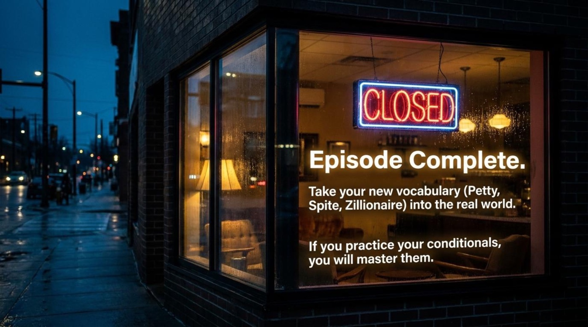
The main takeaway for language learners is simple and motivating: emotional scenes are the strongest memory hooks in existence. Nobody forgets the image of Ross in a child-sized T-shirt, and nobody who learns petty, spite, and crush through that image will ever confuse them again. The call to action is to rewatch the episode with fresh eyes, shadow Chandler's sarcasm, notice every second conditional, and then use one new word — just one — in a real conversation this week. That is how a sitcom stops being entertainment and becomes a personal tutor.
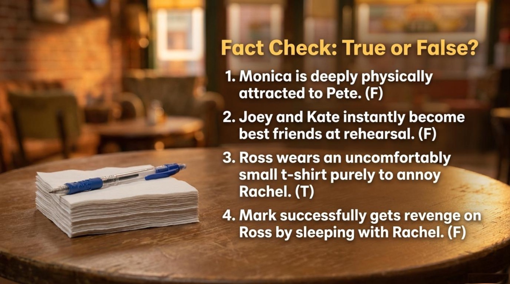
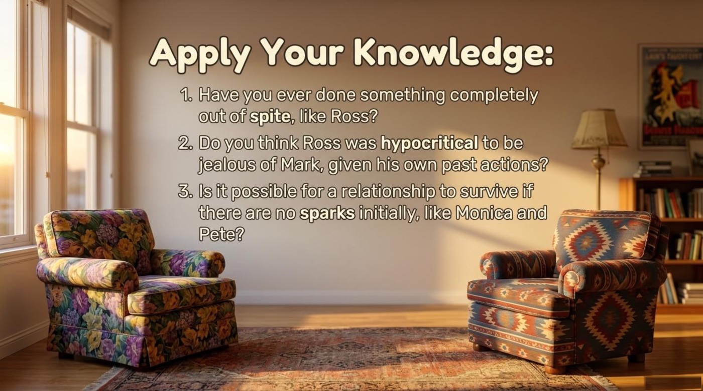
📎 Lesson Files
The original presentation for this masterclass is available below.